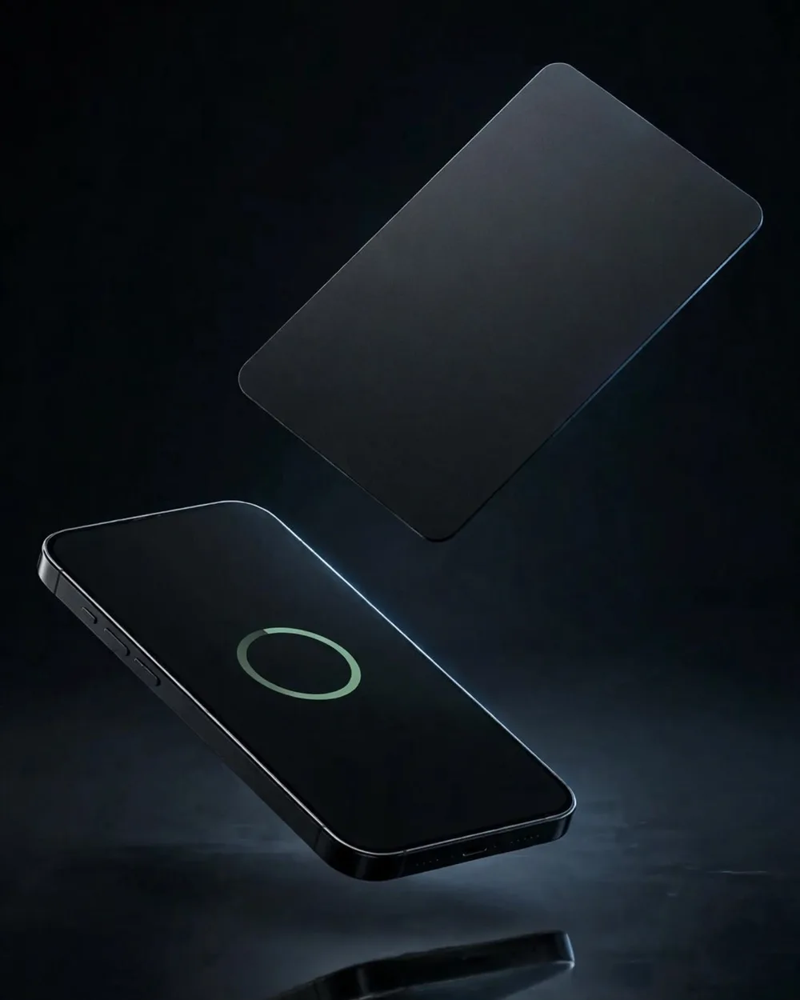

Benched: Focus
A physical card that puts you back in control of your time. Tap it, and your apps go quiet.
First Benches go to the waitlist. No spam, no newsletter.

The math
The average person now spends 6 hours a day looking at a phone. Add it up and it stops sounding like a habit.
of screen time a day, on average
of your life gone every year at that pace
of an 80-year life spent looking down
Screen TimeBefore
Daily Average
6h 00m
Social2h 41m
Entertainment1h 38m
Games52m
Screen TimeWith Benched
Daily Average
3h 00m
Social58m
Entertainment44m
Games19m
The same phone, the same week — the second report is what a Bench on the fridge does to it. Your Screen Time report already knows your number.
Not rounded to your last birthday. Down to the fraction of a second, and still moving.
You are 0.00000000000 years old
How it works
The Bench is a matte black card, the size of a credit card, that lives where your phone should not — the fridge, the desk, the front door. The app does the blocking. The Bench makes it physical.
Schedules arm and lift themselves, and Remote Activation starts a session from anywhere. Ending one always takes the walk.
The habit, in numbers
times a day the average user checks their phone
check it within 10 minutes of waking up
tried to cut back in the last year — and only 1 in 4 of them really succeeded
*From published surveys of U.S. adults — Reviews.org, 2023 (1,000 adults, asked to read their own Screen Time report) and Pew Research Center, 2026 (9,750 adults). Willpower is the most-tried method. It is not the most reliable one.
Pay-back
A qualified day is 4 or more hours kept, with no break. Every qualified day earns money back toward the price of your Bench, and the daily rate grows the longer you keep the habit. Refunds go back to your card.
A steady user is fully refunded in about 90 to 120 days. The Bench keeps working either way — earned money is never taken back.
Never trapped
A blocking tool you cannot escape is a trap. Benched is built the other way.
No session runs longer than 12 hours. The block lifts itself at the ceiling, even if the app never opens.
Five instant exits, built in, no questions and no crack. When they run out, they come back on request.
Delete Benched and the block is gone. Nothing obstructs it, nothing guilts you about it. It is your phone.
Phone, Messages, Maps, Wallet, Camera and your banking and health apps are never blocked. Emergency calls are never blocked, ever.